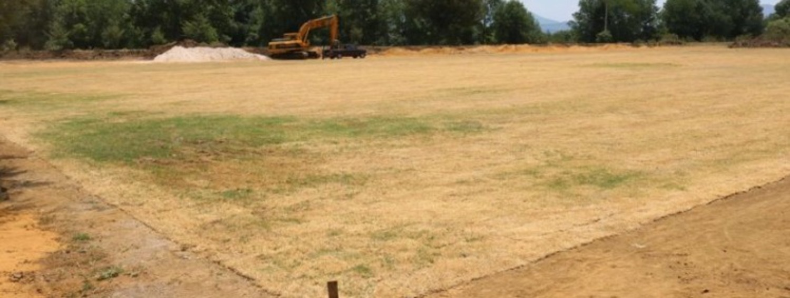

Un poco de historia...
El es Pedro Zamora, quien fue nuestro primer presidente. Desde el año 1971 hasta el año 1973.
Pedro Zamora, nacido en 1950 en un pequeño pueblo de Argentina, siempre soñó con llevar el fútbol a su comunidad. Desde joven, Pedro jugaba en las calles, soñando con formar un equipo que representara la pasión de su gente. En 1980, con el apoyo de amigos y familiares, fundó el Club San Miguel, un pequeño equipo con grandes aspiraciones. Pedro, con su espíritu incansable y su amor por el deporte, trabajó arduamente para conseguir recursos y construir un modesto estadio. Bajo su liderazgo, el club creció, convirtiéndose en un símbolo de unidad y orgullo local. Su enfoque en el desarrollo de jóvenes talentos y el compromiso con la comunidad ayudaron a que el Club San Miguel se ganara el respeto en la región. Aunque Pedro dejó el cargo de presidente en 2005, su legado perdura en cada gol y en cada celebración del club, recordando a todos el poder del esfuerzo y la pasión por el fútbol.
Primeros pasos...
La construcción de la cancha del Club San Miguel fue un desafío monumental, pero un testimonio de la dedicación de Pedro Zamora. En 1982, después de fundar el club, Pedro se enfrentó a la ardua tarea de levantar un campo que pudiera albergar a los entusiastas de la comunidad. Con un presupuesto limitado y pocos recursos, Pedro comenzó por reunir a un grupo de voluntarios locales dispuestos a contribuir. El proceso comenzó con la limpieza y nivelación del terreno, una tarea que requirió meses de trabajo manual. Con la ayuda de donaciones y patrocinios de empresas locales, se adquirieron los materiales necesarios. Las gradas se construyeron con madera reciclada, y el césped fue sembrado cuidadosamente. Pedro supervisó cada etapa, asegurándose de que el campo tuviera una calidad adecuada para los partidos. Finalmente, en 1984, la cancha fue inaugurada en una ceremonia que celebró el esfuerzo colectivo. Aunque humilde en comparación con estadios más grandes, la cancha del Club San Miguel se convirtió en un lugar de orgullo y pasión para la comunidad, marcando el inicio de una historia rica en logros y espíritu deportivo.